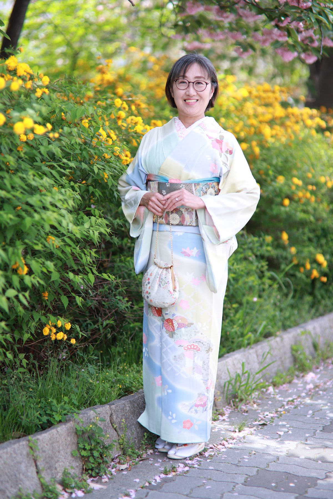
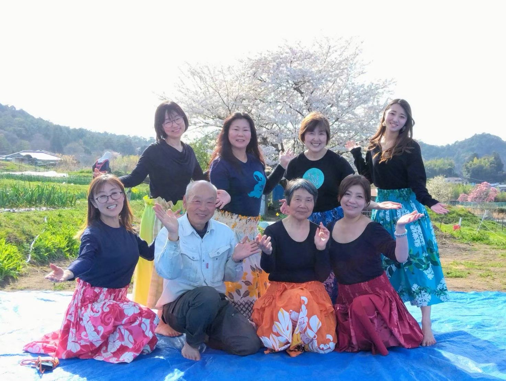
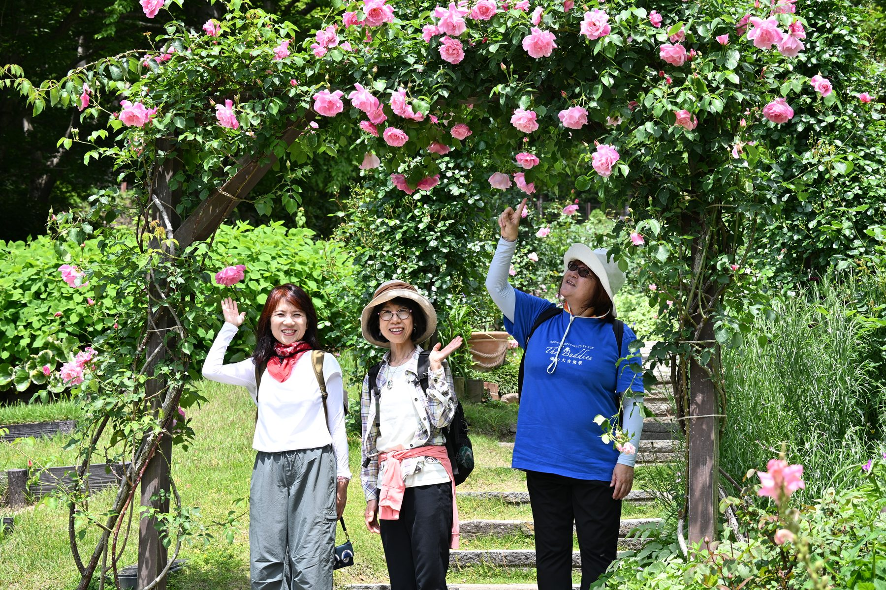
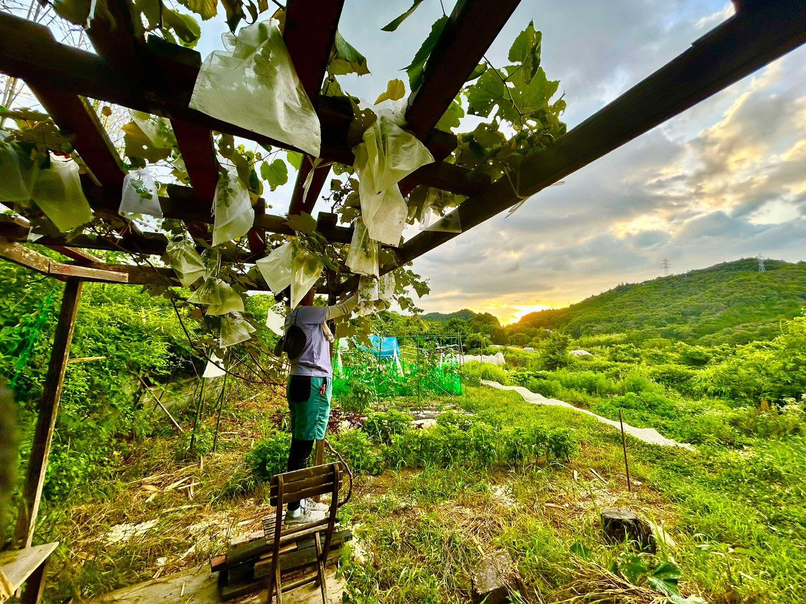
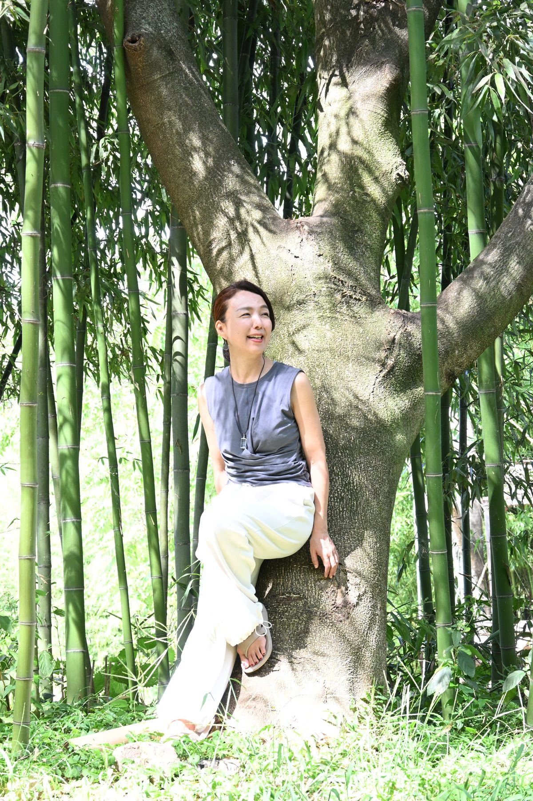
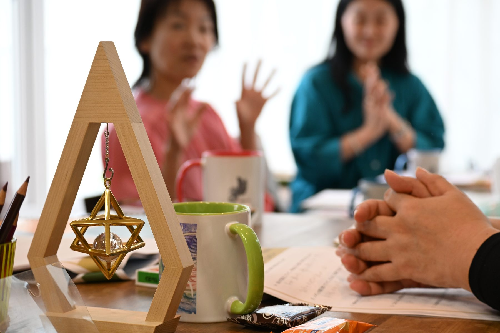
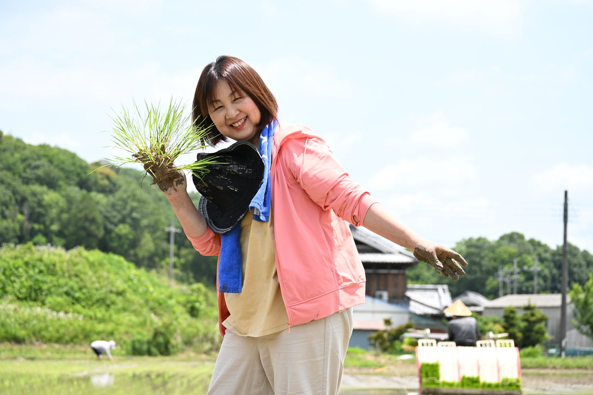
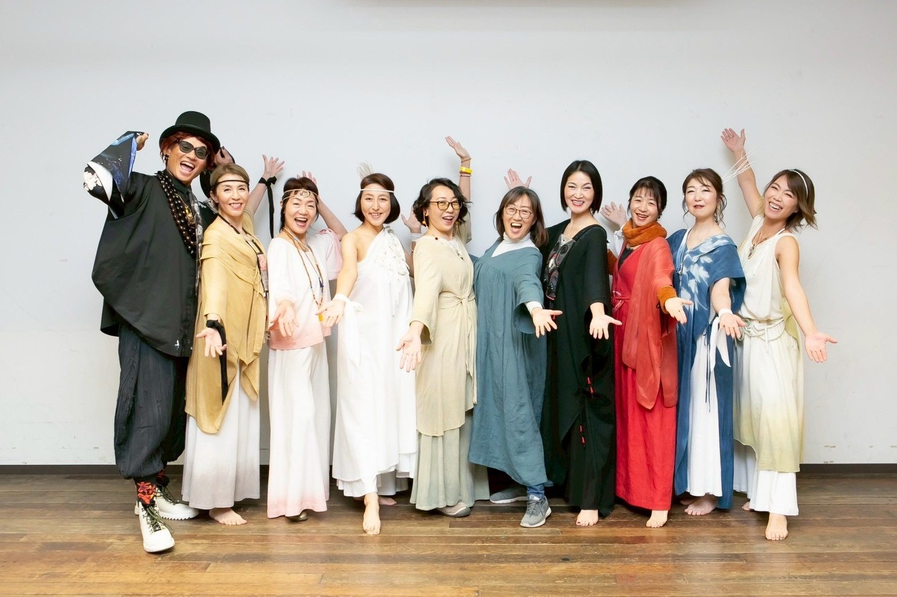
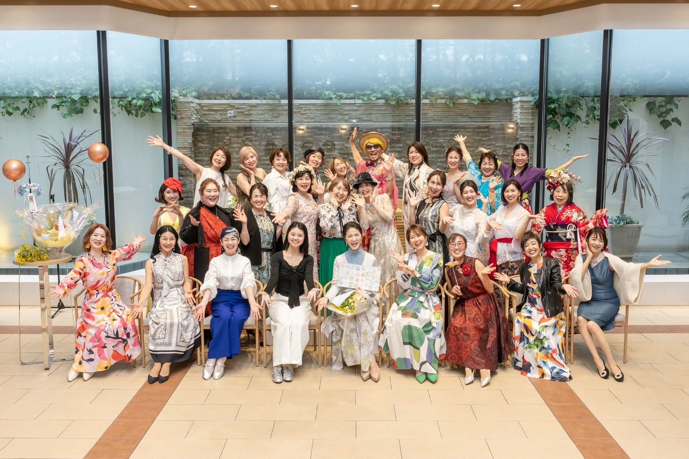
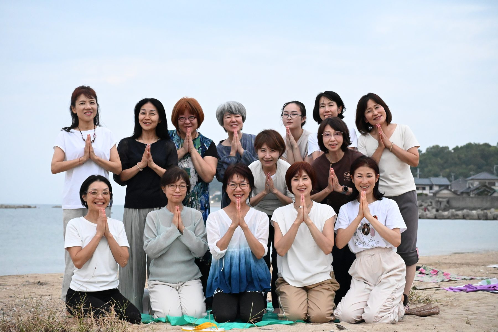

兵庫・阪神間を拠点に、人と人、人と自然、
暮らしと文化をやさしくつなぐ場づくりを行っています
会計・事務局・イベントサポート・写真撮影などの実務力を土台に、人と自然、人と人、暮らしと文化をやさしくつなぐ場づくりを行っています。
長年、地域のコミュニティ農園に関わり、畑で野菜を育てること、手づくり味噌や漬物、季節の食を分かち合うことを通して、自然とともにある暮らしの知恵を大切にしてきました。
感性だけでなく、現実を動かす力があることが大きな強みです。名簿作成、会計、連絡調整、案内文づくり、チラシ制作、当日の段取りなど、見えないところで人や場を支える仕事を、誠実に丁寧に積み重ねます。







畑で野菜を育て、季節の恵みを分かち合います。手づくり味噌、漬物、保存食など、暮らしの知恵をみんなで学び合う場です。
身体を動かし、自分を感じる時間。ハワイのアロハの精神と日本の「和」が響き合う、やさしい場をつくります。
自然の中に身を置き、心と身体をリフレッシュ。布引ハーブ園など、神戸・阪神間の自然を歩きます。
大切な着物に新しい命を吹き込む着物リメイク。日本の季節行事、食文化、暦など、暮らしの中にある文化を手渡します。
子育て後の女性を対象にしたハワイリトリートや淡路島リトリートを構想中。「自分にかえる」をテーマにした旅です。
イベント・プロジェクトの事務局として、名簿管理・会計・連絡調整・チラシ制作・写真撮影などで場を支えます。
㈱グレート・ターニング イベントサポート（麻ミットわ、まこもまつり、縄文方舟まつりなど）、宇佐見裕子7つの習慣実践会 事務局、公式ライン運営サポート、マッキー次元上昇ウォーク 事務局など。



「Moana」はハワイ語で「無限に広がる海」を意味します。「Garden」は、人が根を下ろし、育ち合う庭。自由さと安心感、旅と暮らし、祈りと日常が同時に存在する場所です。
畑、食、ヨガ、フラ、ハイキング、着物リメイク、旅、リトリートなどを通して、参加する人がほっと自分に戻り、静かに力を取り戻せる時間をつくることを大切にしています。
派手な消費ではなく、「身体で感じる」「手を動かす」「自然の中に身を置く」「人と語り合う」ことを通して、自分に戻っていく時間です。
兵庫・阪神間を拠点に活動。会計事務所での実務経験を土台に、地域・自然・文化・女性のつながりを育む活動を行っています。コミュニティ農園の運営サポート、各種イベントの事務局、写真撮影、Canvaによるデザインなど、見えないところで場を支える力が強みです。
人生の後半を迎える女性たちが、自分らしさや女性性、自然とのつながりを取り戻していくための場「Moana Garden」を育てています。日本の和とハワイのアロハが響き合う、やさしく開かれた世界観を大切にしています。